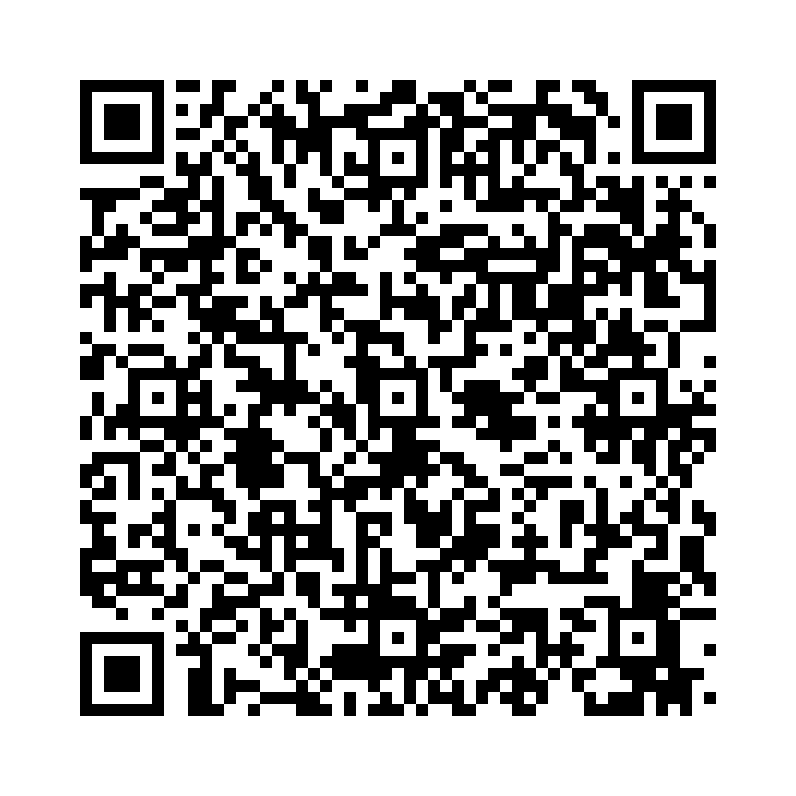

受動態は「～される」「～された」という意味を表します。以下の形があります：
以下の単語を並び替えて正しい文を作成しましょう。（和訳を参考にしてください）

問題1: (is / being / cleaned / the / room / now) - その部屋は今掃除されています。
解答: The room is being cleaned now。
解説: 進行形の受動態では、be動詞 + being + 過去分詞を使用します。
問題2: (can / be / solved / problem / this) - この問題は解決されることができます。
解答: This problem can be solved。
解説: 助動詞を含む受動態では、助動詞 + be + 過去分詞を使用します。
問題3: (to / be / seen / wants / by / famous / he / people) - 彼は有名人に見られたいと思っています。
解答: He wants to be seen by famous people。
解説: to不定詞の受動態では、to + be + 過去分詞を使用します。
問題4: (been / invited / have / they / not / to / party / the) - 彼らはそのパーティーに招待されていません。
解答: They have not been invited to the party。
解説: 否定文の受動態では、助動詞/完了形 + not + be/been + 過去分詞を使用します。
問題5: (is / being / fixed / now / the / computer/ ?) - そのコンピュータは今修理されていますか？
解答: Is the computer being fixed now?
解説: 疑問文では、be動詞 + 主語 + being + 過去分詞を使用します。